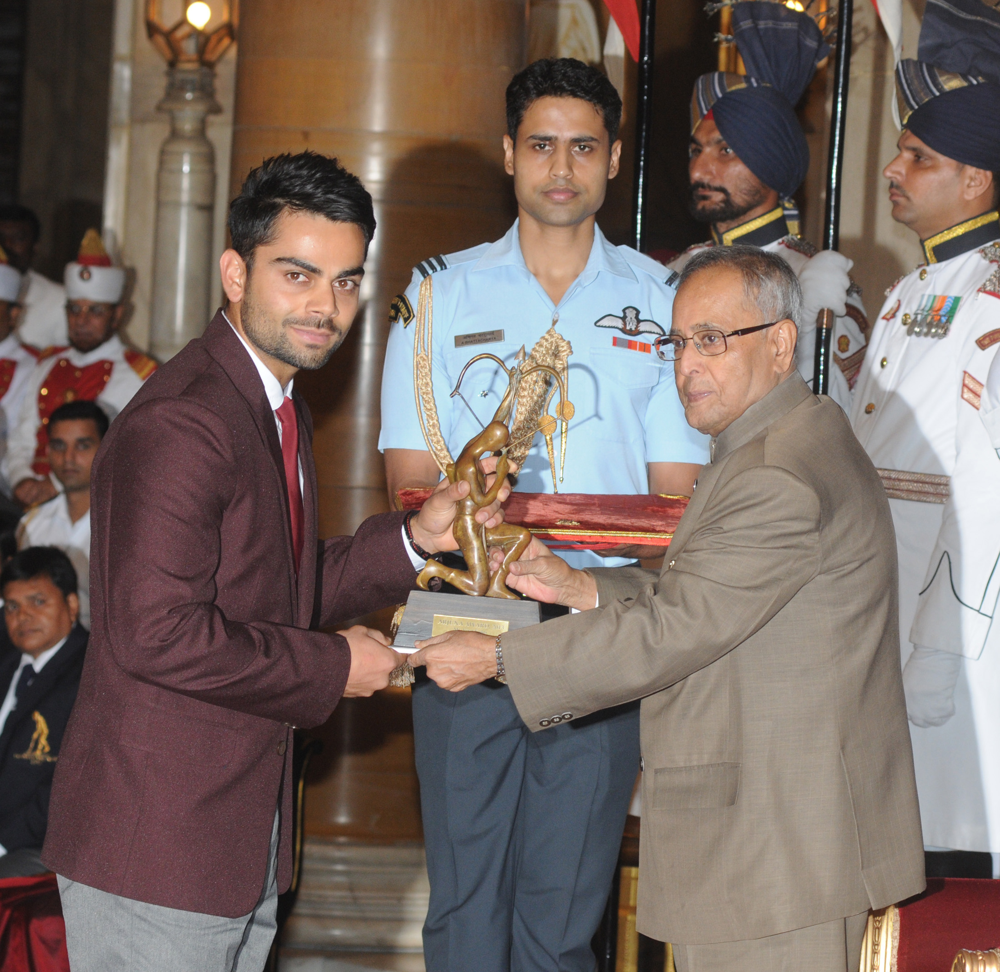
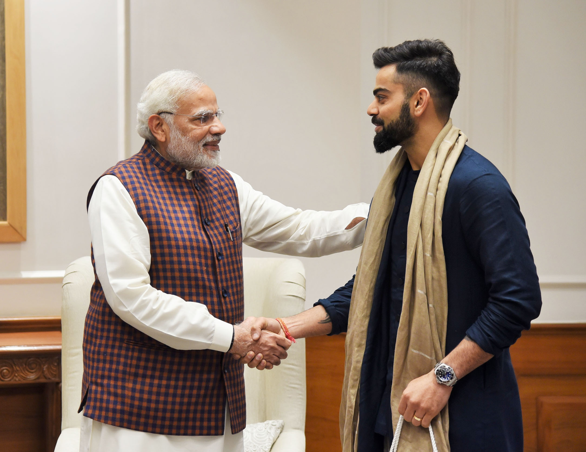
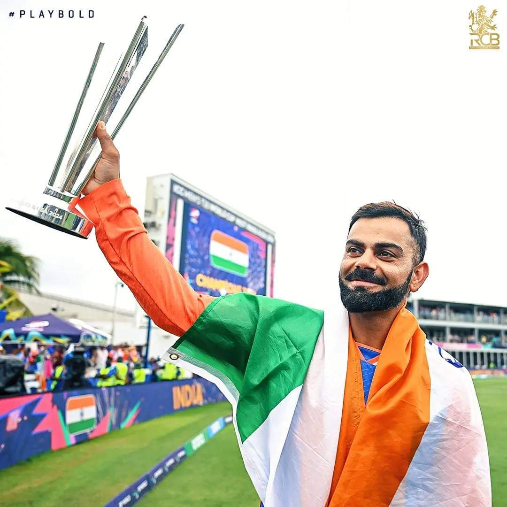
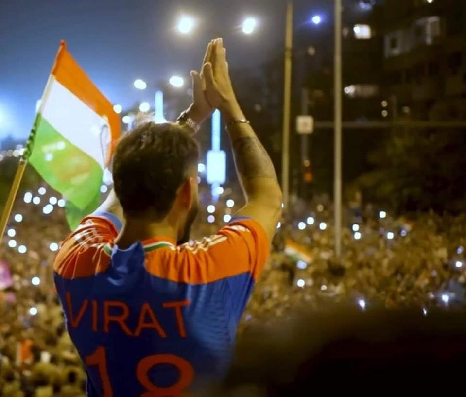
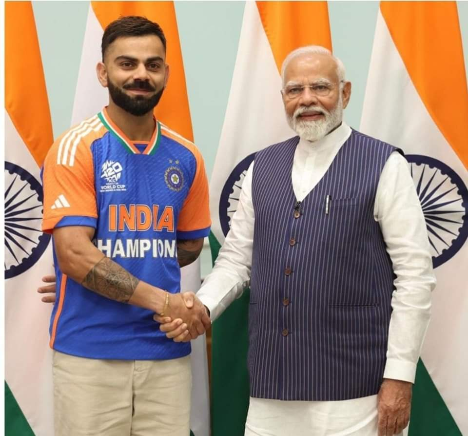
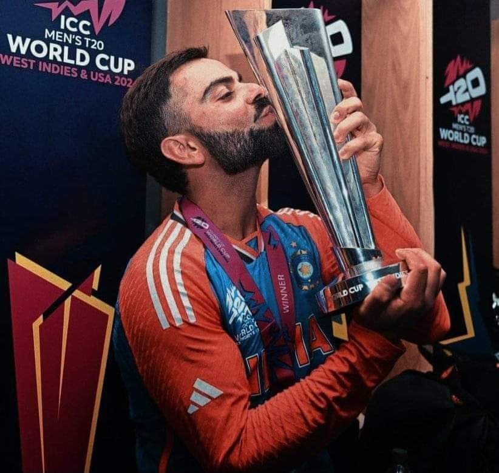
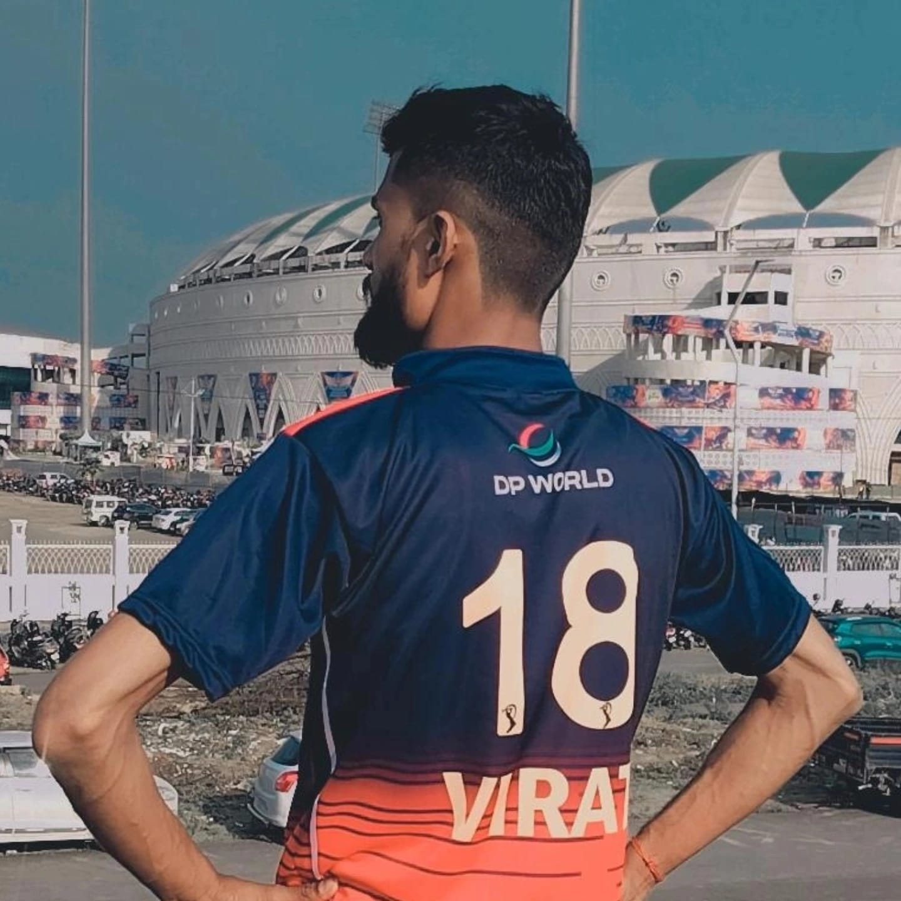

Virat Kohli born 5 November 1988 is an Indian international cricketer who plays Test and
ODI cricket for the national team and is a former captain in all formats. He is a right-handed batsman and
an occasional right arm medium pace bowler. Kohli holds the highest IPL run-scorer record, ranks third in
T20I, third in ODI, and stands the fourth-highest in international cricket.[4] Regarded as one of the
greatest batsmen of all time, he holds the record for the most centuries in ODIs and has the second most
centuries in international cricket all time. Kohli was a member of the Indian team that won the 2008
Under-19 Cricket World Cup, 2011 Cricket World Cup, 2013 Champions Trophy and 2024 T20 World Cup and also
captained India to win the ICC Test mace three consecutive times in 2017, 2018, and 2019.[6] He represents
Royal Challengers Bengaluru in the Indian Premier League and Delhi in domestic cricket.
In 2013, Kohli was ranked number one in the ODI batsmen ICC rankings. In 2015, he also achieved the same for
T20I rankings.[7] In 2018, he was ranked the top Test batsman, making him the only Indian cricketer to hold
the number one spot in all three formats. He is the first player to score 20,000 runs in a decade. In 2020,
the ICC named him the male cricketer of the decade
Timeline
2013
2017
2017
2018




Kohli receiving the Arjuna Award from President Pranab Mukherjee in August 2013
Kohli receiving the Padma Shri award from President Pranab Mukherjee in March 2017
Kohli meeting Prime Minister Narendra Modi in New Delhi in 2017
Kohli receiving the Khel Ratna Award from President Ram Nath Kovind in September 2018
Image Gallery
    Virat Kohli & PM Modi: Discussion on T20 World Cup!
Why I Chose Virat Kohli
Virat Kohli’s journey from a young boy playing cricket in the streets of Delhi to becoming one of the greatest cricketers in the world is truly inspiring. His dedication to fitness, discipline, and relentless passion for the game continues to motivate me.